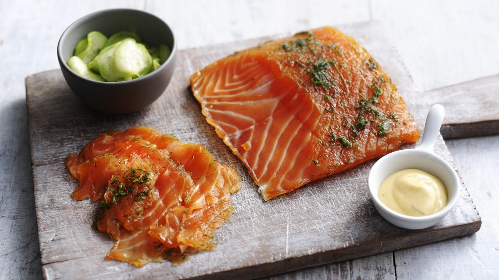

This is a recipe for graved lax, courtesy of Ernest.

Ingredients
Salmon Marinade
2 kg salmon
150 g salt
75 g sugar
200 g fresh dill
30 g Dijon mustard
freshly ground pepper
Mustard Sauce
100 g Dijon mustard
250 g sugar
1 lemon (juice only)
1 dl oil
1 dl vinegar
150 g dill, finely chopped
Instructions
Salmon and Marinade
Clean the salmon into fillets and turn them in the marinade; rub marinade in well. Let marinate for about 24 hours, turning the salmon from time to time from one side to the other.
Dry the salmon with a cloth to remove the marinade and place the salmon in oil until the fillets are completely covered. Leave the salmon in the oil for 72 hours.
Serving:
Slice thinly and garnish with a little Bibb lettuce, lemon, fresh dill, and serve with mustard sauce.
Mustard Sauce
Mix mustard and sugar, then add vinegar.
Slowly add the oil little by little, while stirring.